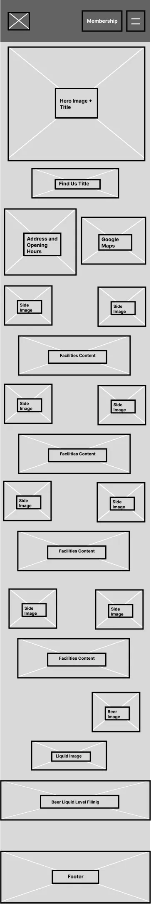
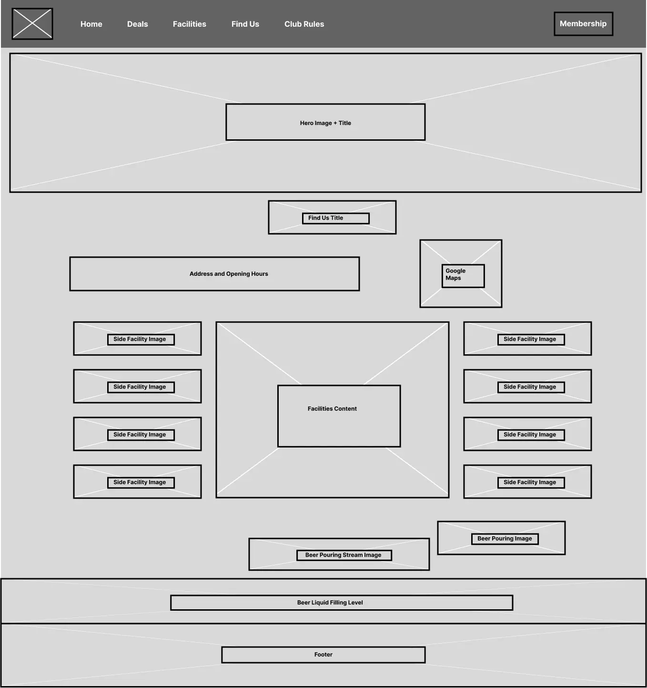

Project Overview

The goal of this project was to redesign the website for the local business 22 Club, a snooker and pool venue. The redesign focused on improving usability, readability, and accessibility for users searching for information about facilities, membership, and location.
To avoid copyright issues when presenting the work publicly, the redesigned concept was renamed 01 Club. The project focused on UX research, interface design, and front-end development, while the existing administrative portal was excluded from the redesign scope as it falls outside a front-end UX role.
View ProjectServices Used
Each tool served a defined role across the design and development workflow.
Understanding The Problem
The original site created usability barriers that prevented visitors from quickly finding key information.


The "Find Us" page only displayed a Google Maps embed without clear section labelling.

Typography and readability challenges from large sections of centre-aligned text, reducing scannability.

Background and text colour do not meet AA or AAA requirements. No content structure to indicate what images represent.
Other key issues identified include:
- Mobile responsiveness — navigation elements became cramped on smaller screens, reducing usability
- Content hierarchy — facilities information appeared visually cluttered, reducing clarity
- Inaccessible pages — some pages contained minimal or empty content, creating dead-end navigation paths
These findings highlighted the need for clearer structure, stronger visual hierarchy, and improved accessibility.
Research & Inspiration
Competitive analysis of similar venue websites surfaced effective UX patterns that directly informed the redesign.
Analysis Observed
- Strong visual hierarchy
- Clearly separated content sections
- High-quality imagery aligned with content
- Consistent typography
- Accessible interactions such as facilities and membership
- Responsive layouts for mobile devices
Decisions Informed
- Improved navigation contrast
- Consistent typography with left-aligned text
- Cleaner section structure
- Improved spacing and visual hierarchy
- Accessible colour contrast combinations
- Consistent image placement across the layout


User Persona
To better understand typical visitors, a persona was created based on expected users of the club website.

Designing with Daniel in mind helped prioritise clear navigation, improved readability, and easily accessible location information.
Ideation — Crazy 8's
Eight layout concepts generated rapidly to explore structure before committing to digital wireframes.


Low-Fidelity Wireframes
Figma wireframes to test layout structure and information hierarchy to create a basic mock-up.


High-Fidelity Prototype
Figma prototypes refining the final visual design that includes validating colour, typography, spacing, and imagery before coding.


Front-End Development
Implemented using semantic front-end technologies, following accessibility regulations.
- HTML5Semantic structure, ARIA
- CSS3Style, grid
- JavaScriptScroll, navigation
- Semantic HTML
Heading hierarchy and roles tags for screen reader support.
- Keyboard Navigation
Full Tab navigation.
- Image Alt Text
Descriptive alt attributes on all images.
- WCAG AA/AAA
All focus and colour pairs tested and verified.
<!DOCTYPE html>
<html lang="en">
<head>
<meta charset="UTF-8" />
<meta name="viewport" content="width=device-width, initial-scale=1.0" />
<title>01 Club</title>
<meta name="description" content="01 Club is a social snooker and pool club.">
<link rel="preconnect" href="https://fonts.googleapis.com" fetchpriority="high" />
<link rel="stylesheet" href="css/style.css" />
<link rel="stylesheet" href="css/grid.css" />
</head>
<body>
<!-- Navigation -->
<nav class="site-nav" role="navigation" aria-label="Main navigation">
<div class="nav-inner">
<a href="index.html" class="nav-logo" aria-label="01 Club – Home">
<span class="logo-number">01</span>
<span class="logo-word">Club</span>
</a>
<ul class="nav-links" role="list">
<li><a href="index.html">Home</a></li>
<li><a href="club-deals.html">Deals</a></li>
<li><a href="index.html#facilities">Facilities</a></li>
<li><a href="index.html#find-us">Find Us</a></li>
<li><a href="club-rules.html">Club Rules</a></li>
</ul>
<a href="membership.html" class="nav-cta" aria-current="page">Membership</a>
<button class="hamburger" aria-controls="mobile-menu"
aria-expanded="false" aria-label="Open navigation menu">
<span></span><span></span><span></span>
</button>
</div>
</nav>
<!-- Mobile drawer -->
<nav id="mobile-menu" class="mobile-drawer" aria-label="Mobile navigation">
<ul role="list">
<li><a href="index.html">Home</a></li>
<li><a href="club-deals.html">Deals</a></li>
<li><a href="index.html#facilities">Facilities</a></li>
<li><a href="index.html#find-us">Find Us</a></li>
<li><a href="club-rules.html">Club Rules</a></li>
</ul>
</nav>
<!-- Hero -->
<header class="hero home-hero" role="banner">
<img src="images/hero_banner_container.jpg"
alt="01 Club Ormskirk interior" fetchpriority="high" />
<span class="hero-overlay" aria-hidden="true"></span>
<div class="hero-content">
<h1>01 Club Ormskirk</h1>
<p>Home of Snooker, Pool and Darts</p>
<a href="membership.html" class="hero-cta">Become a Member</a>
</div>
<aside class="hero-tagline" aria-label="Club summary">
<p class="tagline-heading">A Space to Play & Unwind</p>
<p class="tagline-desc">Quality tables, relaxed atmosphere and a
fully licensed bar open 7 days a week.</p>
<a href="#facilities" class="tagline-btn">More About Us</a>
</aside>
</header>
<main>
<!-- Find Us -->
<section id="find-us" class="find-us" aria-labelledby="find-us-heading">
<img src="images/find_us_background_layer.jpg" alt=""
class="find-us-bg" aria-hidden="true" loading="lazy" />
<div class="find-us-inner">
<h2 id="find-us-heading" class="find-us-title">
Find <span>Us</span>
</h2>
<div class="find-us-content">
<div class="find-us-left">
<article class="info-card">
<h3>Address</h3>
<address>
22 Club Ormskirk, Moorgate<br />
Ormskirk L39 4RU<br />
United Kingdom
</address>
</article>
<article class="info-card">
<h3>Opening Hours</h3>
<p>Monday - Saturday: 12:00 PM - 11:00 PM</p>
<p>Sunday: 12:00 PM - 10:00 PM</p>
</article>
<a href="https://maps.google.com/..." target="_blank"
rel="noopener noreferrer" class="directions-btn">
Get Directions
</a>
</div>
<iframe src="https://www.google.com/maps/embed?..."
title="01 Club Ormskirk location map" loading="lazy">
</iframe>
</div>
</div>
</section>
<!-- Facilities -->
<section id="facilities" class="facilities"
aria-labelledby="facilities-heading">
<header class="section-header">
<h2 id="facilities-heading">Facilities</h2>
</header>
<ul class="facilities-list" role="list">
<li class="facility-item">
<img src="images/bar_header_container.png"
alt="Bar" loading="lazy" />
<p>From hand-pulled ales to cocktails, our fully stocked
bar is the perfect place to relax between frames.</p>
</li>
<li class="facility-item">
<img src="images/snooker_header-container.png"
alt="Snooker" loading="lazy" />
<p>Full-size professional snooker tables maintained to
the highest standard.</p>
</li>
<li class="facility-item">
<img src="images/pool_header-container.png"
alt="Pool" loading="lazy" />
<p>Enjoy both American and English pool at 01 Club.
Available throughout opening hours for all members.</p>
</li>
<li class="facility-item">
<img src="images/darts_container.webp"
alt="Darts" loading="lazy" />
<p>Test your aim on our dedicated darts boards.
Available to all members during opening hours.</p>
</li>
</ul>
</section>
<!-- Beer pour animation -->
<section class="beer-section" id="beer-anim" aria-hidden="true">
<div class="beer-stage">
<img src="images/liquid_icon.webp" alt="" class="bl-liquid" />
</div>
</section>
</main>
<!-- Footer -->
<footer>
<div class="footer-inner">
<div class="footer-grid">
<section class="footer-col" aria-labelledby="footer-club">
<h3 id="footer-club">Club</h3>
<ul role="list">
<li><a href="index.html">Home</a></li>
<li><a href="index.html#facilities">Facilities</a></li>
<li><a href="club-deals.html">Deals</a></li>
</ul>
</section>
<section class="footer-col" aria-labelledby="footer-connect">
<h3 id="footer-connect">Connect</h3>
<address>
<p>Tel: <a href="tel:01695727127">01695727127</a></p>
<a href="mailto:[email protected]">
[email protected]
</a>
</address>
</section>
</div>
<small class="footer-bar">
© 2025 01 Club. All rights reserved.
</small>
</div>
</footer>
<script src="js/membership.js"></script>
<script src="js/beer-pour.js" defer></script>
</body>
</html>Performance Optimisation
Lighthouse audits identified large image assets as the primary bottleneck. Two targeted fixes resolved the issues.
- 99PERFORMANCE
- 96ACCESSIBILITY
- 100BEST PRACTICES
- 100SEO
Image Optimisation
Converting to WebP reduced file sizes significantly while maintaining quality and preserving transparent backgrounds.
Animation Simplification
An early pulsing animation was replaced with an in-scroll fade, using fewer assets for better performance.
BEFORE

AFTER

Evaluation and Testing
Accessibility validated against WCAG standards using colour contrast tools.


Version Control
Development tracked with Git throughout with regular commits provides a clean, documented record of progress.
- Mar 12, 2026
- Alter text placement aligned left
- Alter navbar and pages font size increased
- Add contrast check navbar text and hero ✓
- Mar 9, 2026
- Enhance README with project details and design process ✓
- Mar 8, 2026
- Add contrast checks for nav, hero and background ✓
- Add mobile and desktop v1, v2 and v3 testing ✓
- Create Lighthouse testing ✓
- Add more semantic tags for hero
- Alter images converted to WebP files
- Delete unused images
- Add homepage
- Mar 7, 2026
- Add club deals page
- Add club rules page
- Mar 6, 2026
- Remove old image files, compressing file size
- Add membership page
- Add initial project structure
- Add high fidelity prototype link to design directory ✓
- Add Figma link for low fidelity desktop layout ✓
- Add Crazy 8 sketches ✓
- Add 22 Club persona ✓
- Create wireframes ✓
Final Outcome
The redesigned 22 Club website gives visitors a significantly cleaner, faster, and more accessible experience, making key information easy to find on any device.
- Improved Navigation
Higher contrast nav with clearly visible links across all screen sizes.
- Clear Content Structure
Logical hierarchy: facilities, hours and location easy to scan.
- Mobile Responsive
Fully responsive across all screen sizes, no broken elements.
- WCAG Compliant
AA and AAA contrast met. Semantic HTML for screen readers.
- Performance Improved
WebP images and simplified animations lifted Lighthouse scores.
- User-Centred Design
Every decision anchored to Daniel's (persona's) needs.